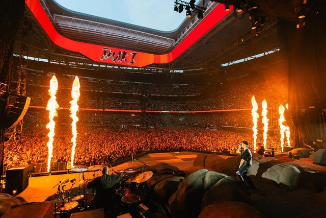

Duki en el Bernabéu: conquista internacional
En 2024, Duki se presentó en el mítico Estadio Santiago Bernabéu de Madrid, un lugar reservado para los grandes de la música mundial. Fue un show histórico, ya que se convirtió en el primer artista argentino de trap en lograrlo.
El concierto fue una demostración de la expansión del movimiento urbano argentino hacia Europa. Miles de fanáticos españoles y latinoamericanos corearon sus canciones más icónicas como “She Don’t Give a Fo” y “Givenchy”.
Duki expresó su orgullo por representar a Argentina en un escenario tan importante y agradeció a su público por hacerlo posible. El show fue transmitido en vivo para distintos países, consolidando su imagen global.
Este paso marcó un antes y un después en su carrera: ya no solo era un ídolo nacional, sino un embajador del trap latino en el mundo entero.
← Volver al inicio